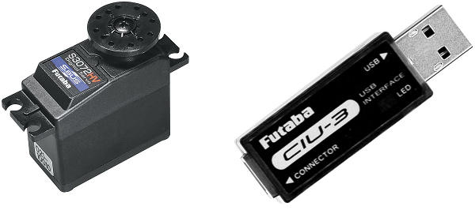
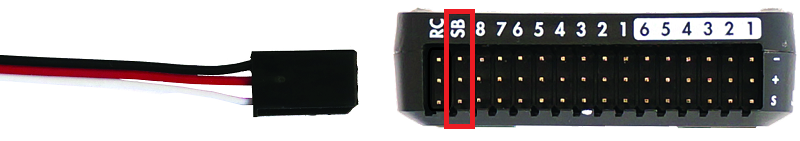
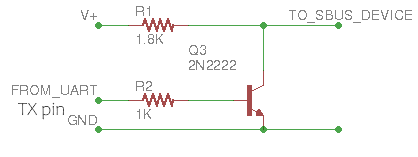
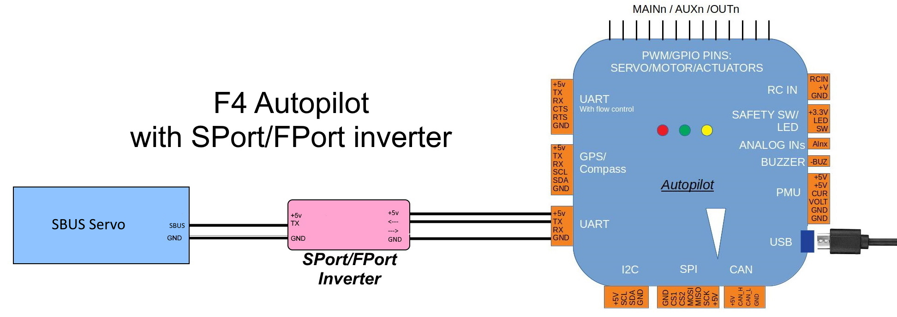

SBus Servos¶
{kind=link}
Futaba SBus/SBus2 servos accept the serial SBus protocol and can be controlled by ArduPilot once connected to the autopilot’s “SB” port or any other serial port. Up to 16 servos can be daisy chained together meaning that instead of each servo being directly connected to the autopilot, only a single serial connection from the autopilot is required.
The transmission rate is 100K baud.
Where to Buy¶
Available from many online retailers including Amazon.com
The Futaba CIU-3 USB Interface is also recommended to allow easy configuration of the servos (online manual)
Configuring the Servos¶
Each servo’s ID needs to be set to a number from 1 to 16. The number chosen should correspond to the servo number used to configure and control the servo from within ArduPilot. For example if the ID is set to “9”, the SERVO9_MIN, SERVO9_MAX, SERVO9_FUNCTION, etc parameters will be used to configure the servo.
Connect the servo the Futuba CIU-3 USB Interface dongle (online manual) and plug the dongle into a Windows PC. A prompt should appear to download and install the required drivers
Download and install the S-Link software (search for “S-Link” here)
Use S-Link to set each servo’s ID (online instructions)
{kind=link}
image courtesy of Futaba.com
Connecting Servos to a Autopilot¶
{kind=link}
If using an autopilot with a designated “SBUS out” pin ,connect the servo to that port on the autopilot. For Cube autopilots use the “SBUSo” port. For other autopilots without these connectors see the instructions below. The BRD_SBUS_OUT parameter must be enabled (=1).
Note
On some autopilots, this pin has a shared function with analog RSSI input by setting RSSI_ANA_PIN to this pin. These functions cannot be used simultaneously.
SERVO_SBUS_RATE controls the update rate to the servos. The default is 50 Hz but can be set to any value in the range of 25 Hz to 250 Hz
Connecting Servos to a Serial Port¶
SBus servos can also be controlled from any of the autopilot’s serial ports. The protocol uses inverted logic levels (unidirectional: output only) meaning an inverting cable is required when using a standard serial port, if the autopilot is not capable of internally inverting the signals. Autopilots using an F7 or H7 processor can internally invert the serial port’s TX pin. Below is a diagram showing a simple NPN transistor inverter which will suffice:
Alternatively, a commercial SPort inverter can be used, as shown below:
Warning
do not power the servo from the serial port’s 5V, use the systems servo power bus!
Set the SERIAL2_PROTOCOL = 15 (“SBUS servo out”) if using Serial2 (normally TELEM2). For other serial ports use the appropriate
SERIALx_PROTOCOLparameter.The port’s baud rate parameter (in this case SERIAL2_BAUD ) will automatically be set to 100,000
For F7/H7 processors an inverter is unnecessary, set SERIAL2_OPTIONS bit 1 to “1” (TX invert) if connecting to Serial port 2.
SBUS to PWM Decoders¶
SBus to PWM decoders allow using the SBus interface with regular PWM servos but beware that some decoders including the FrSky SBUS & CCPM Decoder generate a fixed PWM output rate (~170 Hz) that may damage analog servos (digital servos should be fine)